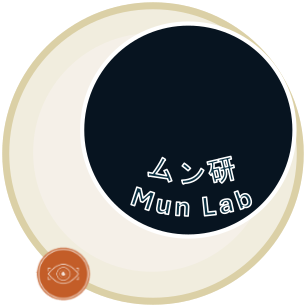

Mun Lab
Faculty of Software and Information Science, Iwate Prefectural University 岩手県立大学 ソフトウェア情報学部 ムン研究室
Building AI that is useful to society, through image processing, machine learning and computer vision.
画像処理・機械学習・コンピュータビジョンで、社会に役立つAIをつくる。

Seeing more from every image
画像から、より多くを見いだす
Mun Lab is an artificial intelligence laboratory in the Faculty of Software and Information Science at Iwate Prefectural University. We develop AI technologies centered on image processing, machine learning and computer vision, from super-resolution of low-resolution images to the detection and classification of small objects.
ムン研究室は、岩手県立大学ソフトウェア情報学部の人工知能分野の研究室です。画像処理・機械学習・コンピュータビジョンを中心に、低解像度画像の超解像や小さな物体の検出・分類などのAI技術に取り組んでいます。
Our current focus is agriculture: pest detection systems and visualization apps that bring AI into the field. We aim to create technology that is useful to society, grounded in both theory and implementation.
現在は特に農業分野への応用に力を入れ、害虫検出システムや可視化アプリの開発を進めています。理論と実装の両面から、社会に役立つ技術の創出を目指しています。
What we work on
研究テーマ
Super-Resolution
超解像技術
Reconstructing fine detail from low-resolution images.
低解像度画像から精細な情報を復元します。
02Pest Detection
農業害虫の検出・分類
Detecting and classifying agricultural pests with image processing and AI.
画像処理とAIで農業害虫を検出・分類します。
03Monitoring & Visualization
モニタリングと可視化
Web and Android apps for monitoring agricultural pests.
Web・Androidアプリで害虫の発生状況を可視化します。
04Learning from Limited Data
限られたデータでの学習
Machine learning methods that work when data is scarce.
少ないデータでも機能する機械学習手法を研究します。
Latest updates
お知らせ
- 2026.10.15 Lab研究室 Our lab website is now live. Welcome to Mun Lab! 研究室のホームページを公開しました。
Get in touch
お問い合わせ
For research collaboration or questions about the lab, feel free to contact us.
共同研究や研究室に関するご質問は、お気軽にご連絡ください。